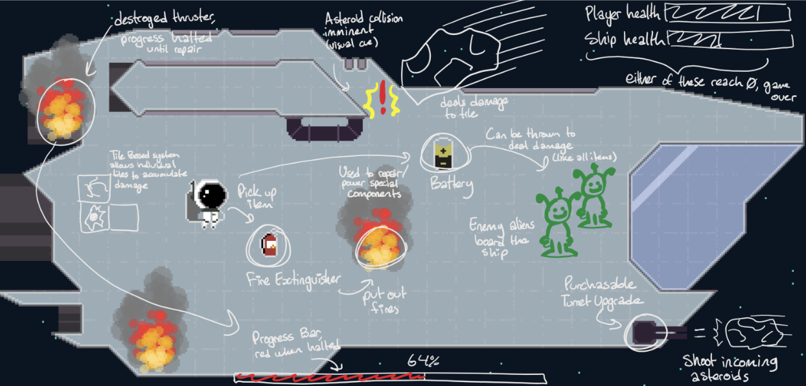

Week 3 - Development Deep Dive
This week, our team continued working on AstrOh-No! in our divided sectors. The work done this week was heavy on concepts, brainstorming, then putting ideas into place to create a set piece storyline our team can follow to continue game production.
What We Worked On
Our visual artist has been busy in the lab, drafting up different styles the ship could take in the end product, as well as drafting up looks for the tools used throughout the game. The mechanics wrench, fire extinguisher, batteries and sheet metals, which will be important consistent gameplay mechanics the player will need to master to succeed.In other news, our level designer has been busy working on different area types, boss types, and level features. There is also a set narrative plan now, where the game follows a storyline of two workers on a ship, sucked into a black hole and adventure from level to level trying to get back home. A few level ideas have also been accepted to be worked on for our final project. Examples include: a “solar flare” level where a sun in the background shoots off solar rays which damage the player and set fire to the ship, so it needs to be avoided and fires put out. An ice level, where ice asteroids slow the player on impact, freezing them if hit twice in a short amount of time. Finally, a gas level, where poison gas clouds float by damaging whatever is in its path. There are more levels planned, you’ll just have to stay tuned!
Our visual artist, Jordan, this week began work on backgrounds (as pictured) as well as other important assets. With his own ideas and ideas of the level designer, he can take off illustrating the ships, enemies, player, and tasks in AstrOh-No! 
Concept shot for Core Loop by Jordan
The programmers this week continue to work on game logic, implementing movement, and basic asteroid behavior, with the story and level design in mind, they can begin working on more of the actual game. This is the agenda for next week, where the programmers continue working on the game, the artists continue making assets, the level designer irons out level placements and mechanics, while the project manager continues working on documentation.
← Back to Weekly Blogs